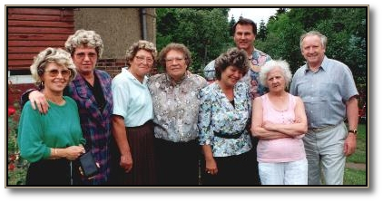
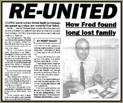
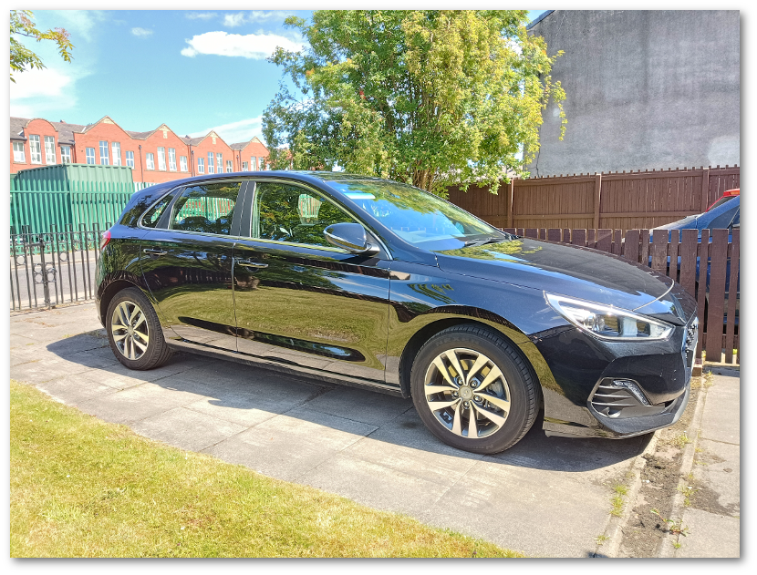
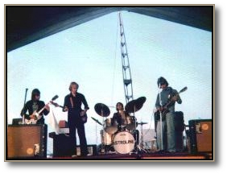

Fred Scheit » FYI
I'm an American living in Manchester,
England!
I lived in Watertown, Connecticut, until I was 10 years old, when the
family
moved to England in the 1960's, following the death of my father.
If you remember me from your old school days, place of work, etc., I
would be pleased to hear from you!
|
|
Where's Connecticut?If you're not sure where
Connecticut is, just look at a map of the USA! Find New York
(everyone knows where that is!), and Connecticut is next to it on
the right! Watertown is situated about 80 miles north-east of New
York City!
For more information on my hometown area, please look at the Waterbury
Republican-American newspaper, Connecticut
Tourism, or WATR
1320AM Radio websites.
|
|
What about Manchester?I live in a town called Eccles.
The town
is situated about 5 miles west of the city center of Manchester.
Best known as the home of the Eccles Cake, James
Birch first
baked them at his shop in Church Street in 1796. Famous people born
in Eccles include motor tycoon Sir Henry Rolls and actors Robert
Powell and Ben Kingsley. The name Eccles is derived
from the
Celtic meaning for church, the first reference to it was in
1120.
What can I say about Eccles? Well, it's not the end of the world,
but you can see it from there! The area has suffered from many
years of neglect and under investment, ever since it became a part
of the City of Salford. Whilst Salford used the resources of Eccles
to help rebuild it's own poor and rundown Victorian past, the lack
of investment resulted in Eccles becoming a modern day wasteland,
with rows of boarded up shops, as major shopping chains deserted
for the nearby Trafford Centre (shopping mall). As a
result of
the opening of the Trafford Centre, the traffic has increased
manyfold, and gridlock is the order of the day. There have been
efforts made to improve the town, but much remains to be done. The
town center has been declared car-free (in theory) although a new
bus station has been built right in the center, on the old historic
site of the Eccles Cross! Mostly, I try to avoid visiting the town
center of Eccles, due to the lack of decent shopping facilities,
and also for the fact that you have to pay to park there! The only
aspect of Eccles that appears to be operating at a profit now are
the traffic wardens, waiting to pounce on an unsuspecting
public!
For more information on Manchester, look at Manchester
Evening News, BBC - Manchester, or North
West Tourist Board websites.
|
|
How I found my lost German family!A search to trace my lost
family in Germany has opened up a whole new world for me!
If you've
read my web page, you will know that since the death of my father,
my family moved to England, and we lost touch with the German side
of the family.
In 1993, I was looking at old photographs of my
father's family. I couldn't read the German writing on the reverse
of the photos, so I asked a work colleague to translate them for
me. It was obvious how much my German family thought of my father,
so I decided to search for them!
|
|
My momentous visit to Germany!In June 1993, I visited
Germany on vacation. I arrived in Dresden (my father's hometown),
armed with only a few photographs, a German phrase book, and
determination to succeed!
After various enquiries at the local
registrars office, they gave me an address of one of my aunts, but
this address was nearly 40 years old, as shown on a copy of my
German grandmother's death certificate when she died in 1954.
|
|
The Reunion!I didn't think that my
aunt would still be living at the address given to me, but I had to
find out!
I was kindly given a Dresden street map, and found the
street, and the house. I looked at the name on the door-bell, and
it was my aunt's name! I rang the door bell, and a woman came to
the door. I announced who I was (in very poor German!), and was
surprised to be hugged and warmly welcomed into the house. It was
indeed my aunt, Martha Kämpfe! Since that date, I have visited
all my family in Dresden, and other parts of Germany, as well as an
aunt living in New York!

In August 1993, a newspaper article about my
family search appeared in the British Gas North Western publication Link-Up.
Please view the RE-UNITED
article.

In 1998, I did a search on the internet for my rather unusual
surname, and was surprised to find other families in the U.S.A. and
Germany, that I did not know about! I contacted Dick Scheit in Iowa
and his sister Jan Luethy from Wisconsin, and they provided me with
information on their extended family. Please visit their Scheit/Kneeskern
Family Page.
|
|
What car do you drive?I drive a Hyundai i30. It's
a 5-door hatchback, economical to run and insure, and suitable
as my daily runabout, but also comfortable on longer
journeys.

In addition to Cruise Control and Bluetooth, the car has air-conditioning, although I don't often get
the chance to use it in Manchester! It also seems
to have a 'cloaking' device! It's not mentioned in the car manual,
and there appears to be no way that I can find to switch it off. It
seems to switch itself on automatically, then I have to be on my
guard to watch out for other drivers, who have difficulty in seeing
my 'invisible' car, frequently causing me to have to brake hard or
swerve to avoid them!
My previous cars were: Austin Cambridge, Vauxhall Viva, Austin Mini
Van, Ford Cortina, Opel Manta, Hillman Imp, Austin Maxi, Opel Manta
(again!), Triumph 2500, Yugo 45, Ford Capri, Ford Capri (again!),
Fiat Uno, Fiat Tipo, Citroen BX, Citroen ZX, Citroen ZX (again!),
Peugeot 406, Seat Cordoba, Seat Ibiza, Ford Fiesta, (back to!)
Seat Ibiza, Hyundai i30, Hyundai i30 (again!), Kia cee'd, (back to!) Seat Ibiza, Seat Leon, (back to!) Seat Ibiza, Vauxhall Astra, and (back to!) Hyundai i30.
|
|
What do you pay for a gallon of gas?In England, we pay for petrol/gas by the LITRE.
1 US Gallon = 3.7854 Litres.
For example, on December 1st 2007, I paid 100.9p per litre for petrol
from my local petrol station. With a currency exchange rate of approx.
2 US dollars to the UK pound, that works out to around $7.63 per gallon!
I checked gas prices in my old home town of Waterbury CT on the same
day, the cheapest for a gallon was $3.12!
|
|
What's your taste in music?Some of my favourites are Joe Bonamassa, Boston, Terry Brock, Chicago, Clutch, John Fogerty, Giant, The Isley Brothers, Jefferson Starship, Leonid & Friends, Huey Lewis and the News, Seventh Key, Keith Urban, and not
forgetting Manchester
Rap, by The Bosnians!
I also like most types of pop music, and have a large collection of
CD's from Abba to ZZ Top!

After leaving
school, I was in a rock band called Astroline for a
few
years. I played bass guitar, and we played songs like 'Born To Be Wild'
(Steppenwolf) and 'Jumpin' Jack Flash' (Rolling Stones). Later on, I
also tried my hand at writing my own songs, one of
which was regularly played by another local band, after the demise
of Astroline.
|
|

|